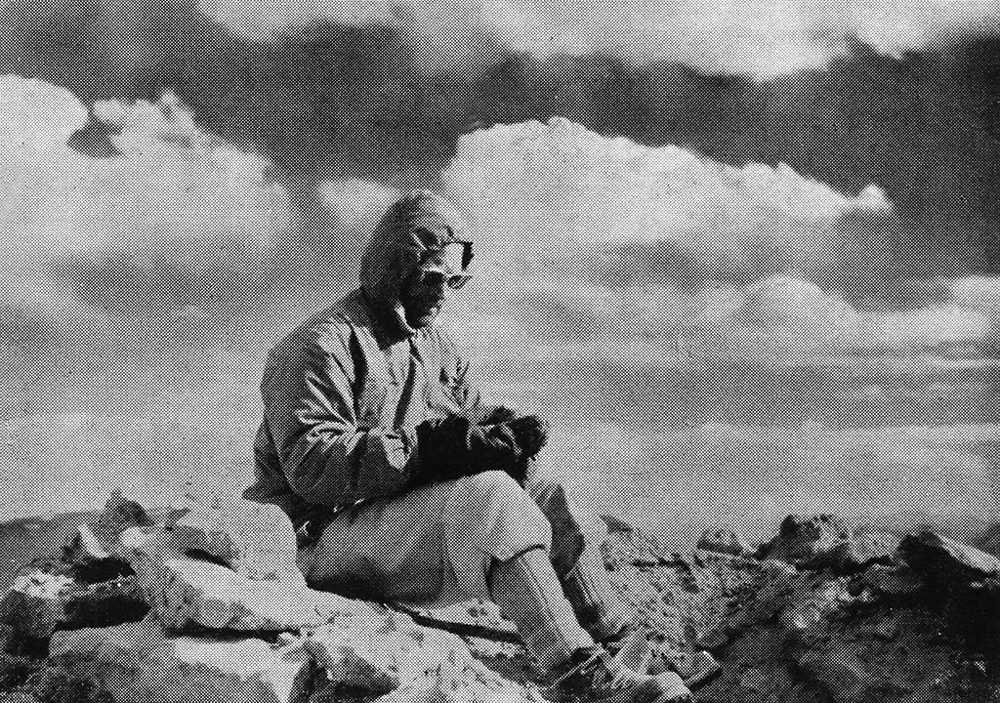
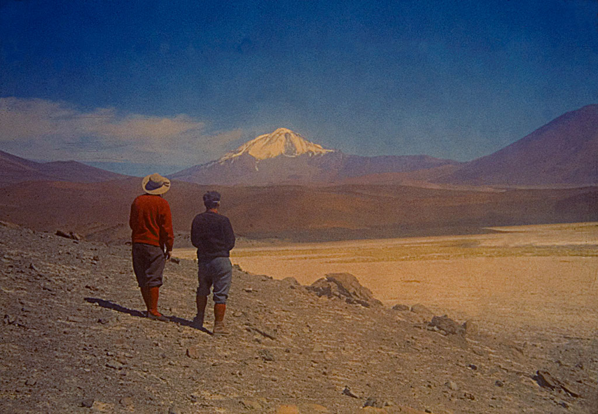
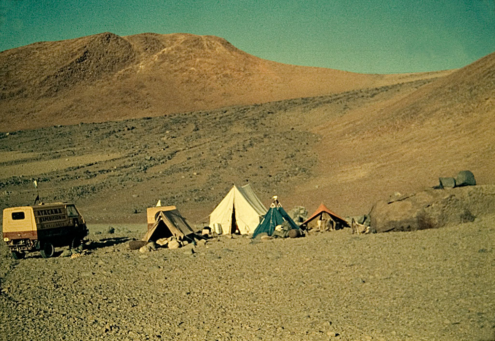

El interés de andinistas y arqueólogos de Argentina y Chile sobre las más antiguas
ascensiones que se conocen
- Por Evelio Echevarría, Club Andino de Chile -
Restauración Fotográfica: Centro Cultural Argentino de Montaña, Natalia Fernández Juárez
Pues sin el pasado, ¿qué somos?
(Confucio, hacia el año 500 a.C)
Dentro del alpinismo mundial casi no existe interés por saber algo de los antiguos altares de cumbres y sus misterios. Este interés sí existe en forma mucho más amplia entre los andinistas y arqueólogos de Argentina y Chile, pero en todos los otros países donde hay montañismo o no existe o es el campo de uno que otro cientista y nada más.
Sin embargo, aun dentro de nuestro andinismo todavía existe un conocimiento superficial que se limita a creer que los antiguos altares de cumbres se hallaban en unas pocas y muy conocidas montañas y que se trataba de hallazgos que aparecían sólo de cuando en cuando.

El volcán argentino-chileno Llullaillaco (6.739 metros), el más elevado sitio arqueológico del mundo.
Foto: Colección Evelio Echevarría

Mapa de los adoratorios de altura en los Andes y la ubicación del Nevado del Chañi.
Fuente: Boletín del Museo Chileno de Arte Precolombino. Vol. 12, N°2, 2007
No se comprende, ni se ha estudiado tampoco en país alguno, que el montañismo pre-histórico cuenta ya con más de 300 altas montañas ascendidas, con una anterioridad al montañismo moderno de miles de años, que se dio en cinco continentes y por motivos muy variados.
Se impone por tanto la necesidad de un estudio rápido, que nos ofrezca aunque sea en forma esquemática, un panorama de la fascinante arqueología de cumbres, tanto nacional y andina como internacional.
Pero al empezar, es necesario que el lector siempre tenga presente un sentido de las proporciones:
• Hace miles de años, cuando tuvieron lugar tales ascensiones, había glaciación en la mayor parte de las montañas del planeta.
• Se trataba de ascensiones de los tiempos de los trogloditas y que llegaron sin ser notadas por la civilización occidental hasta ya avanzado el siglo XIX.
• Son de la pre-historia por pertenecer a la historia anterior a la historia que fuera registrada por el mundo occidental. Es decir, son de la arqueología
• y que este compendio se refiere exclusivamente a ascensiones de CUMBRES, comprobadas por hallazgos en ella o por crónicas que las describieron en su tiempo.

Diario sobre el hallazgo del sitio ritual en el volcán Llullaillaco. Expedición encabezada por el doctor Orlando Bravo.
Imagen: Colección Evelio Echevarría

Cumbre del conocido cerro mendocino Penitentes, 4.351 metros, situado al sureste de
Puente del Inca.
El terreno cercado bajo la cumbre correspondería a un recinto ceremonial incaico.
Foto: Colección Evelio Echevarría
Preguntas y respuestas breves
¿Cuándo? Las más antiguas ascensiones que se conocen datan de hace unos 8.000 años y también se opina que podrían ser unos 18.000 (¿o aun 30.000?). En el Medio Oriente constan algunos ascensos de entre 6 a 8.000 años. Se dieron tales ascensos esporádicamente, por varios siglos. Sabemos que en los Andes hubo ascensiones en forma ya sostenida, acaso entre los años 1000 y 1500 dC.
También debió haber habido una actividad más o menos constante en los cráteres de la América Central y del sureste de Asia (hoy Japón, Filipinas e Indonesia). Pero, por lo mismo, no saber de alguna ascensión que ocurrió en una fecha ya exacta significa que este campo pertenece a la arqueología y no a la historia.
¿Cuántas? Las cumbres del planeta ascendidas por los antiguos y estudiadas por el que suscribe se reparten así: Sudamérica, más de 200; Norteamérica, 72; Centroamérica, 3; África, 8; Medio Oriente, 8; Asia, 8 y Europa, 10. Total verificado: sobre 315 hasta el presente.
¿Por quiénes? Por trogloditas en sus orígenes más remotos (acaso antes del Neolítico o fase avanzada de la Edad de Piedra). Luego, por cazadores y recolectores de productos vegetales y animales. Posteriormente, por montañeses orólatras (adoradores de las montañas) o por motivos puramente religiosos y a la vez, por buscadores de minerales, sobretodo “azufreros.” En tiempos más modernos y ya contemporáneos con los comienzos del alpinismo, por violadores de tumbas que ascendían cumbres para saquear altares y entierros indígenas.

Volcán Damavand, 5.610 metros, cumbre máxima de Irán, ascendido repetidamente por buscadores de azufre
ya desde el siglo X, d.C.
Foto: Colección Evelio Echevarría

En la cima del monte Nemrut Dag, 2.150 metros, de Turquía oriental, la expedicion de 1883 del Museo Otomano halló estatuas gigantes de hacia el año 50 D.C. Foto: Colección Evelio Echevarría
¿Por qué? Para sobrevivir... En su origen absoluto o más remoto (de 8.000 a 18.000 años o aun antes) por la necesidad vital de trabajar la obsidiana, piedra volcánica, vidriosa y cortante, con la cual se podía fabricar armas como cuchillos y puntas de flechas. Acaso el mismo uso se dio al pedernal. Tales ascensos eran motivados por la cacería de animales, sobretodo venados y cabras montesas.
Nunca olvidemos: ¡la ascensión de los antiguos a los (entonces glaciados) cráteres volcánicos obliga a reconocer que la obsidiana es la madre del montañismo!
Pasado el nomadismo y llegado el asentamiento en caseríos y pueblos y una vez que se originaron las religiones, vino el culto a la montaña misma, por representar ésta diversas formas de sustento (adoración del agua y la nieve, es decir, “agua en la cumbre” y de allí, la agricultura). Por lo mismo, ascensiones para propiciar a los dioses de la Naturaleza, como también a los volcanes con cráteres que podrían causar destrozos. A veces, habitación de cumbres por santos y ermitaños, erección de altares cimeros (que pasaron a llamarse ziarets en Asia y Medio Oriente y huacas en tierras del Incanato). Y por el lado práctico, extracción de azufre y aun, nieve y hielo.
¿Cómo? En forma muy primitiva al comienzo, sin implementos y acaso poco abrigo. Nada sabemos del calzado que se usaba. A lo cual habría que agregar la glaciación de hace miles de años. Y sin embargo, muchas cumbres andinas fueron no solamente ascendidas sino también habitadas en condiciones muy adversas, a juzgar por las canteras prehistóricas y las pircas con techumbre, haces de leña y restos de fogatas.

En febrero de 1964, rescate de la momia del Cerro El Toro, 6.168 metros. A la derecha el Dr. Schobinger.
Foto: Colección Dr. J. Schobinger

Mathias Rebitsch en la primera de las construcciones del cerro Galan. Foto: Libro Santuarios Indigenas en Altas Cumbres
¿Pruebas? La prueba máxima es un cuerpo o esqueleto humano enterrado en terreno cumbrero (como en el caso del Cerro El Toro, 6.168 metros, Argentina). Las otras pruebas son numerosas y variadas:
• altares con objetos simbólicos, semi-expuestos o ya enterrados (Cerro Las Tórtolas, 6.160 metros, Chile),
• sacrificio ritual de animales en los cráteres, lo que se continúa hasta el presente (Volcán Merapi, 2.911 metros, Indonesia),
• objetos propios de cazadores hallados en las cumbres o cercanía, como puntas de flechas y arcos (Monte Mendel, 4.174 metros, Estados Unidos)
• hacinamiento de leña, a veces quemada en parte (Cerro Las Leñas, 5.462 metros, Argentina),
• altares de piedra, homenaje a algún genio protector (Pic Toubkal, 4.168 metros, Atlas marroquí).
• herramientas de madera para excavaciones diversas (Volcán Damavand, 5.610 metros, Irán),
• canteras para trabajo de obsidiana o pedernal (Cerro Quiscatola, 4.230 metros, Ecuador),
• pircas y cercos, a veces con un monolito central (Volcán Antofalla, 6.409 metros, Argentina),
• objetos que representaban oraciones y rezos (picachos de 5.200 metros, Himalaya central, India),
• trincheras para cazadores emboscados, tiempos más modernos (Flat Top Mountain, 3.756 metros, Estados Unidos),
• extensos recintos ceremoniales para congregaciones religiosas (Cerro Pambamarca, 4.075 metros, Ecuador),

El picacho rocoso llamado Katzimo (2.100 metros) por los indígenas Acoma y Mesa
Encantada por los habitantes de
Nuevo Mexico, Estados Unidos. Cuando al fin
algunos norteamericanos lograron escalarlo hallaron en la cima reliquias y cerámica
de los Acoma; imagen de 1925.
Foto: Colección Evelio Echevarría

Volcán Copiapó, 6.052 metros, Chile. La plataforma incaica de la cumbre descubierta por polacos en 1937.
Dibujo: Witold Paryski

En los alrededores de la enhiesta cumbre del Garet el Yenus (2.327 metros) existe
cerámica usada
por cazadores prehistóricos. Alto Atlas de Argelia.
Foto: Colección Evelio Echeverría
• plataformas para ceremonias (Cerro Doña Inés, 5.070 metros, Chile),
• refugios excavados en roca, de ermitaños o anacoretas (Erciyas Dag, 3.916 metros, Turquía),
• tumba-altar, de piedra, representación de un santo enterrado (Sikarám, 4.755 metros, Afganistán),
• entierro ritual de órganos del cuerpo de niños fallecidos (Volcán Tajumulco, 4.220 metros, Guatemala),
• cimientos o ruinas de alguna iglesia o capilla, ( Monte Hermón, 2.817 metros, Siria),
• restos de cerámica y alfarería de cazadores, en terreno cumbrero (Garet el Jenun, 2.327 metros, Atlas de Argelia),
• estatuillas, esculturas y figurines enterrados en la cumbre (Iztaccihuatl, 5.286 metros, México),
tejidos, ropaje diverso, cuerdecillas (Nevado Mismi, 5.596 metros, Perú),
varillas adornadas, piedras preciosas o decoradas y perforadas, (Volcán Mauna Kea, 4.206 metros, Hawai, Estados Unidos).
Y así sigue. La mayor montaña, propiamente tal, que sabemos fuera ascendido por los antiguos es por ahora el Volcán Llullaillaco, 6.739 metros, de Chile-Argentina, lo que significa que es el sitio arqueológico más elevado del mundo (sea dicho de paso, el alpinismo moderno no habría de sobrepasar la altura del Llullaillaco, récord de los antiguos, sino hasta 1855). La de menor altura sería el picacho Plesivec, con restos de un altar, 1.696 metros, de Eslovenia o aun, el Cerro Cheuque, 1.350 metros, de la Patagonia argentina. Este último, tiene un raro entierro cumbrero obra de indígenas patagónicos, como anotó en su diccionario de montaña el coronel (R) José H. Hernández. Y la ascensión más antigua de la que hasta ahora se tenga pruebas sería a los hacinamientos de obsidiana del volcán Nemrut Dag (3.051 metros), de Turquía oriental, de hace unos 30.000 años, o fase casi avanzada de la Edad de Piedra.

Cumbre del Cerro Doña Inés, 5.070 metros, Chile. Plataforma ceremonial incaica
fotografiada por un conocido alpinista
y escritor de Madrid.
Foto: Colección de José Martínez

En la cumbre del Monte Belknap, 3.599 metros, Rocallosas Norteamericanas, se hallan antiguas trincheras indígenas donde se emboscaban cazadores de cabras montesas. Foto: Colección de Rick Baugher
Historial
La arqueología de cumbres nació en forma nominal con el descubrimiento de pircas que hizo en el año 1677, el fraile español Méndez (o Meléndez) en la cima del volcán peruano El Misti, a 5.822 metros. Fue él quien escribió haber visto allí construcciones “de los tiempos de la gentilidad.”
Este nuevo campo de la arqueología nació en 1896 ya en forma oficial o sea, analítica, con un escrito del explorador y cartógrafo chileno Francisco J. San Román quien, como jefe de la Comisión Exploradora del Desierto y Cordilleras de Atacama (1883-1889), nos dejó un mensaje decisivo:
En las grandes alturas de los Andes... siempre se encuentran testimonios evidentes de la existencia humana: restos de leña y carbón, utensilios de cobre, puntas de flechas y hasta pequeñas esculturas que atestiguan la predilección de los indios prehistóricos por la ascensión de las cumbres, indudablemente con algún objeto útil, con algún propósito de conveniencia pública...

Vista del Volcán Sagrado de Llullaillaco. Foto: Colección Gerardo Watzl

Campamento base de la expedición arqueológica al Llullaillaco, 1961. Foto: Colección Gerardo Watzl
San Román entonces fue el primero en señalar que se trataba de ascensiones sostenidas, con un propósito político o religioso.
Como nuevos hitos de esta arqueología (y del andinismo y del alpinismo) vino el rescate de momias del Cerro El Plomo, 5424m, Chile y Cerro El Toro, 6.168 metros, Argentina, años 1954 y 1964. La nueva actividad quedó definitivamente establecida con la meritoria actuación de los argentinos.
Antonio Beorchia fundó en San Juan, en 1972 el Centro de Investigaciones Arqueológicas de Alta Montaña (CIADAM) y en 1973 lanzó la revista del mismo. El doctor Juan Schobinger, de Mendoza, se destacó en el triple campo de la arqueología, el andinismo y la publicación de libros del tema. Su sucesora, la doctora Constanza Ceruti, ha seguido el mismo camino. Por ejemplo, en uno de sus varios libros dio a conocer haber llevado a cabo en el norte argentino cinco primeras ascensiones y 22 otras que revelaron el hallazgo de ascensos primitivos, todas entre los 4.612 y 6.031 metros. Por sus conferencias y escritos, la doctora Ceruti, es conocida mundialmente y es ahora directora del CIADAM, por retiro del mismo de Antonio Beorchia.

El Dr. Juan Schobinger, la figura más prestigiosa dentro de la arqueología de cumbre en su aspecto profesional. En el Museo Arqueológico de San Juan, junto a la vitrina de la Momia del Cerro El Toro. Foto: Colección Evelio Echevarría

Antonio Beorchia Nigris, figura decisiva de la arqueología de cumbre, quien fundó el
Centro de
Investigaciones Arqueológicas de Alta Montaña y su revista. Foto:
Guenther Juellich, Munich
Un caso único dentro del montañismo-arqueológico internacional fue la creación en 1999 del Museo de Reliquias Arqueológicas de Alta Montaña, con sede en Salta, Argentina.
En comparación, otra vez desde el punto de vista internacional, los profesionales como los argentinos ya nombrados son poquísimos: la chilena Ana María Barón, del Museo La Paige, de San Pedro de Atacama, el doctor Ismael Montero, de México y los norteamericanos James Benedict y Johan Reinhard. Pero aun sin título profesional o diploma universitario ha habido y hay hoy día entusiastas que contribuyen valiosos hallazgos. Dentro de Chile sobresalen Bión González y Sergio Kunstmann (González descubrió en 1952 restos incaicos en la cima del Volcán Llullaillaco). En la Argentina, Milenco Jurcich dejó un primer libreto del tema que data de 1974 y a continuación se dieron a conocer los activos andinistas y autores Cristián Vitry y Marcelo Scanu. Luego, los españoles Javier y Queralt Sánchez introdujeron en Bolivia la arqueología de las cumbres. Los alpinistas norteamericanos Rick Baugher y Winston Crausaz, escriben sobre las Rocallosas y sobre los volcanes de México, respectivamente. Y finalmente se debe nombrar a los estudiosos: Witold Paryski, polaco, Gustavo Le Paige, chileno-belga y Mario Fantin, italiano, del siglo XX.
Cierran este historial algunos autores y escritores, que aunque andinistas experimentados no participaron en la busca de hallazgos cumbreros. El argentino Jorge González, en su metódica historia del andinismo nacional, dedicó repetidas secciones a la arqueología de cumbre que se dio en la Argentina. En sus libros de temas folclóricos y andinísticos, Marcelo Scanu, combinó con ilustraciones sus hallazgos en las altas cumbres de la Puna de Catamarca. En algunos países de otros continentes algunos estudiosos dejaron listas de ascensiones pre-históricas, que aunque puramente locales o regionales, son su aporte para un estudio que ya debería alcanzar nivel mundial.

Portada del núm. 3 de la revista del CIADAM (Centro de Investigaciones Arqueológicas de Alta Montaña),
fundada por Beorchia. Foto:
Colección Evelio Echevarría

Arqueólogo, antropólogo y montañista Christian Vitry
Estos pocos personajes dieron a conocer al mundo alpinista internacional que lisa y llanamente los antiguos llegaron primero a numerosas cumbres de altura. En otras palabras, aquellos seres primitivos de otros tiempos escribían el “Capítulo Uno,” de la Historia del Montañismo Mundial, que todavía está por escribirse.Tal es entonces la función de este novel campo, al menos en lo que nos corresponde a nosotros los deportistas modernos: no sólo no podemos desconocer sus logros sino que también tenemos la obligación moral de darlos a conocer.
Hoy en día, el andinista o alpinista descubridor de algún hallazgo cimero sólo puede aspirar a complementar al arqueólogo. Y con entera razón pues solamente del segundo vendrá la interpretación científica del hallazgo mismo.
CONCLUSION. Todo lo expuesto anteriormente nos deja algo así como una admiración involuntaria al contemplar y estudiar las hazañas de aquellos seres primitivos, que hace miles de años y en condiciones sumamente desventajosas llegó a las cumbres antes que los primeros, antes que nosotros mismos. ¿Qué podrían pensar los ases de la escalada vertical al respecto, si compararan sus proezas de hoy con las de aquella gente que hace más de 10.000 años realizaba primeras ascensiones?
Sin mayor comentario, dejo ante todos, un viejo dicho norteamericano:
First is first and second is..... nobody!
(Ser primero es ser primero y ser segundo.....¡nadie! )

El Dr. Ismael Montero, mexicano, uno de los principales arqueólogos de cumbre dentro de toda Norteamérica, autor del Atlas arqueológico de la montaña mexicana, 2004. Foto: Colección Evelio Echevarría
Bibliografía:
- Solamente la más básica y que comprende diferentes regiones de varios continentes. Por lo general cada obra ofrece buena cantidad de fotografias y listas bibliográficas.
- Beorchia, Antonio, Revista del CIADAM, San Juan: números l, 1973; 2, 1975; 3, 1978; 4, 1980; 5, 1987; y 6, 1999 (Los dos últimos números tienen formato de libro; el número 5 recibió el título de El enigma de los santuarios indígenas de alta montaña).
- Ceruti, Constanza, Cumbres sagradas del noroeste argentino. Buenos Aires, 1999. Llullaillaco. Sacrificios y ofrendas en un santuario indígena de alta montaña. Salta, 2003.
- Echevarría, Evelio, Chile andinista: su historia. Santiago, 1999. “Summit archaeology”, en Alpine Journal tomo 118, 2014, págs. 190-198.
- Fantin, Mario, A settemila metri gli Inca precursori di alpinismo. Bologna, 1969.
- González, Bión, “Un poco sobre arqueología de alta montaña,” en Anuario de Montaña 9, 1983, págs. 90-93.
- González, Jorge, Historia del montañismo argentino. Córdoba, 2011.
- Hernández, José H., Diccionario incompleto de montaña. Buenos Aires, 2002.
- Jurcich, Milenco, Arqueología de las cumbres. Salta, 1974.
- Montero, Ismael, Atlas arqueológico de la montaña mexicana. Ciudad de México, 2004.
- Pyatt, Edward, The Guinness Book of Mountains & Mountaineering. Enfield, Inglaterra, 1980.
- Scanu, Marcelo, Santuarios de altura de los Andes. Lima, 1987. Andes Centrales. Argentina. Buenos Aires, 2005.
- Schobinger, Juan, compilador, La momia del Cerro El Toro. Mendoza, 1966 y 2008, compilador, El santuario incaico del Nevado de Chuscha. Mendoza, 2004. compilador, El santuario incaico del Cerro Aconcagua. Mendoza, 2001.
Área Restauración Fotográfica del CCAM: Natalia Fernández Juárez
Notas Relacionadas:
-


El Aconcagua, el Santuario sagrado de los Incas -

Exploradores suecos, pioneros de la arqueología de alta montaña
en la Puna -

Montañas Argentinas: Volcán Llullaillaco, Salta y Chile -

Apachetas y Mojones Andinos. Algo más que una acumulación
de rocas -

Santuarios Indígenas en las Altas Cumbres en la Puna de Atacama -

Primeras ascensiones deportivas y arqueológicas al Volcán Llullaillaco (6.739 mts)
Es nuestra misión dar a conocer la Cultura de Montaña Argentina y por lo tanto es prioritario que si es utilizado nuestro material visual, acuerden con la institución su uso. Si están interesados en el material fotográfico del CCAM, le sugerimos que se contacten a: info@culturademontania.org.ar
Todo el material fotográfico del CCAM es restaurado y publicado en alta resolución.